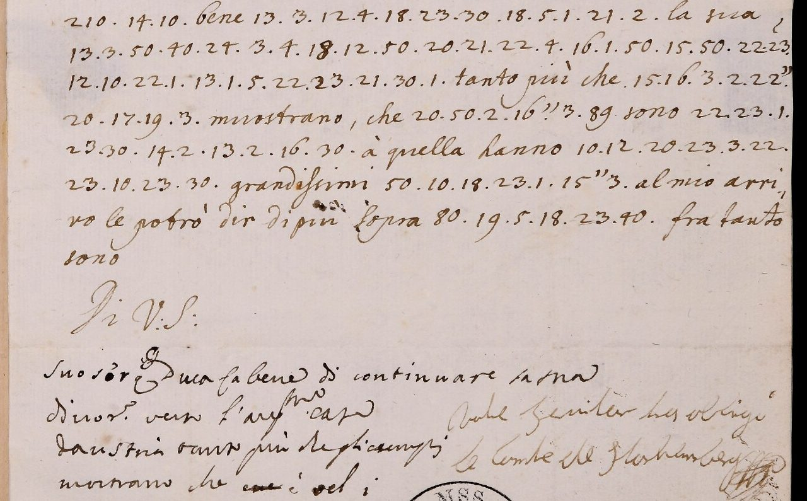

At a glanceKey from adjacent plaintext · partial (87% of the cipher)
- The letters
- Three letters from Count Starhemberg in Vienna to Giuseppe Riva, the Duke of Modena’s agent in London: 21 December 1720 (a postscript), 31 May 1721 and 14 June 1721.
- Where
- Biblioteca Estense Universitaria, Modena, Autografoteca Campori, letter S, “Starhemberg (von), Guido”, cc. 13–14, 17–18 and 1–2. The catalogue tags only the letter of 31 May as ciphered. Lead 1568 (closed here).
- The cipher
- One number per letter, separated by dots: vowels 1–5 and again 10–50, consonants from 11 in alphabetical order; a double stroke after a number doubles the letter; numbers mostly from 80 up are codes for common words and names. It is not the Riva table of the same file (a different cipher, with its own page).
- How it was read
- A contemporary hand deciphered the first half of the cipher passage of 31 May 1721 at the foot of c. 17r and broke off in mid-word. Malcolm McBratney took the 22 letter values and one code (210 = Duca) from it, froze the key on 11 November 2026, and applied it once, unchanged, to the rest of that letter and to the other two. Those two carry glosses of their own (the letter of 14 June between the lines over about 62% of its groups, 21 December on 20 of 33); they were not used to build the key.
- The count
- A group counts as read when it has a key value that stands as transcribed, no doubt mark and no doubling mark; codes never count. 372 of 426 groups in all, but 267 of the 426 carry a contemporary gloss (234 of them read here) and are not this reading; the new part is the 159 groups with no gloss, 138 read (86.8%). Under 95%, so read in part.
- What they say
- That Starhemberg’s return to England is certain, as Ambassador; that the Duke of Modena does well to keep his devotion to the House of Austria; and, on 14 June, a request about an opera company in London and the tenor Borosini, who sings in Vienna and has no equal in Europe.
- Credit
- Transcription, key and reading by Malcolm McBratney, working with AI agents (pull requests #463 and #475, issue #432). The key and about 63% of the groups (267 of 426) are the contemporary glossator’s. The question of the value of 20 and the separate entry for this cipher come from Daniel Bourdeau’s review.
- Still open
- Every 20 (e in “verso”, q in “quelli”); “acquistati”; codes 59, 9, 62, 85, 236 and 301; four places of the letter of 14 June; the images of 14 June and 21 December were not checked. Lindgren’s 2016 article on Riva could not be read, and the Borosini passage is exactly its subject, so priority is not established.
01 The letters
Three letters from Count Starhemberg in Vienna to Giuseppe Riva in London. The library files them under Guido von Starhemberg; the content fits Conrad Sigmund von Starhemberg (“il mio ritorno in Inghilterra è certissimo … con carattere d’Ambasciatore”, 31 May 1721), and the catalogue name is kept here.
| Letter | Leaves | Groups | Read (strict) | Without gloss |
|---|---|---|---|---|
| 21 Dec 1720 (date not checked at full scale) | cc. 13–14 | 33 | 30 (90.9%) | 10 of 13 |
| 31 May 1721 | cc. 17–18 | 104 | 93 (89.4%) | 31 of 36 |
| 14 Jun 1721 | cc. 1–2 | 289 | 249 (86.2%) | 97 of 110 |
| Three letters (sums) | 426 | 372 (87.3%) | 138 of 159 (86.8%) |
The letters of 21 December 1720 and 14 June 1721 carry no cipher tag in the library’s catalogue; they were found by sweeping the Starhemberg file after the 31 May letter.
02 The cipher and its key
One number per letter, separated by dots. The vowels are 1–5 (a e i o u) and again 10, 20, 30, 40, 50. The consonants run in alphabetical order from 11: b c d f g l m n p q r s t z make 11 to 24. A double stroke after a group doubles the consonant. Numbers mostly from 80 up are codes (a few open codes, 59, 9 and 62, stand lower; 80 questo, 84 et, 86 essere, 89 che, 94 lo, 96 di, 97 della, 98 di, 108 Hoffman, 210 Duca, all from the glosses). K21, the key file, holds 22 letter values and 210 = Duca, every one taken from the gloss at the foot of c. 17r. K3, the Riva table, gives no language on these letters.

The value of 20. In the gloss 20 is e (“verso”, “essempi”); and 20 also stands where q is wanted (“quelli”, “qui”). The order of the table explains both: 20 is the second vowel among the tens and the tenth consonant in the run from 11, so the writer’s table had 20 twice. The same order gives 11 = b and 24 = z, both confirmed by words (Borosini glossed; ziffere, notizia, nazione). This is derived, not seen on a key sheet, and no count uses it. The 1719 table of targets/selvatico1719 has b c d f g at 11–15, n at 18 and qu at 20, so K21 looks like a relative of it, but r s t z (25–27 and 29 there, 21–24 here) and the vowel rows differ: a different key. A full-scale re-reading of every 20 has not been done. In “acquistati” (31 May, lines 6–7) the table-order reading leaves 23 to be u in one place and t in the others; that word is counted not read.
03 What was checked
- Counts.
scripts/build.pyrebuilds every count from the transcriptions, the key and the list of downgrades; it reproduced all of them at integration, and a second decoder written from the key file and the transcriptions alone agreed with the filed decryptions on 33 of 33, 104 of 104 and 282 of 289 groups (the seven differences are doubt marks and an illegible sign). - The key before the other letters. RFC 3161 time stamps (Sectigo) of 11 November 2026 hold the same key file, md5 0bbf7091…, at 22:07 GMT (with the 31 May decode), and again with the letters of 21 December (23:09) and 14 June (23:29). By the contributor’s record the key was fixed before those two letters were transcribed; the stamps show only that the files existed at those times. The glossed groups of 31 May are the key’s own source and prove nothing; the 179 glossed groups of 14 June were not used to build the key, but are not counted as a test either.
- Language. The project’s own check (
docs/_validate.py, Italian four-grams): −2.58 against −5.66 for random keys (z 5.7), verdict pass. The contributor’s 5,000 shuffled keys on each letter: none as good (not re-run). The Riva table K3 applied to 31 May gives no language: 597 and 3,435 of 5,000 shuffled keys are as good (the notes do not say on which letters). - Image. All eight cipher lines of c. 17r (104 groups) agree with the transcription on the image (an AI reader’s check at integration); the gloss ends “mostrano che [struck] e vel:” as quoted. The 14 June and 21 December transcriptions were not compared with images by anyone but their transcriber (only short record ids are known).
04 What the letters say
- 21 Dec 1720, postscript. “Lei continui di scrivermi in ziffere spesso”: keep writing to me in cipher, often. The first line is glossed; “in ziffere spesso” is not.
- 31 May 1721. His return to England is certain, as Ambassador. In cipher: the Duke of Modena does well to continue his devotion to the House of Austria (glossed); “those who have been faithful to it have gained very great advantages … on this point” (not glossed; new).
- 14 Jun 1721. The South Sea affair; whether an opera company will be formed in London this year and what it would pay an excellent singer. In cipher: Borosini is in Vienna, sings tenor, has no equal in Europe and would join if asked for in the name of the King or of the company. A certain Colman has arrived to serve under St Saphorin; is he the son of “Hoffman”? And he wants the talk of court and nation in London about Vienna’s conduct towards “Sig. Cnigt” (Robert Knight, the South Sea cashier, by sense: not established). New, with no gloss: “suo parec[…]io”, the proposal and “servirò … il tenore Borosini”, “il St. Saporin”, “al sig. [Hoffman]”, “toccante il sig. Cnigt”, the closing words and the signature code.
05 How the groups were counted
The counts are per cipher group. A group is read when it has a key value that stands as transcribed with no doubt mark and no doubling mark; every code, every unkeyed group, every group the reading had to emend or supply and every doubled letter is not read. If the doubling mark were counted as read, a second figure would be higher; the strict one is used here. A rough count by words from the reading files, made at integration (a word with a bracket or a question mark as open), gives about 57% for the three letters and 54% for the letter of 14 June; this is an estimate, not a measurement. Neither figure is near the 95% bar, and the class is read in part.
06 What remains open
- Every 20 to be re-read at full scale; “acquistati”.
- Codes 59, 9, 62, 85, 236 and 301, and four places of the letter of 14 June (
holes.md). - The glosses of 14 June and 21 December are not transcribed diplomatically, and the clear text of the letters mostly not; the full record ids of these two letters were not available, so the images could not be fetched.
- No second transcription and no second reader. Leaves cc. 3–12 and 15–16 of the file were not examined for more of this cipher.
07 Earlier work
The contemporary glosses cover 267 of the 426 groups (234 of them read here); that is not this work. Lowell Lindgren’s article on Riva (Il Saggiatore musicale 23/2, 2016, pp. 277–374) was not seen; it is sold by the publisher’s platform. At second hand it uses this Starhemberg file (it cites a letter of 13 March 1726) and treats Riva’s recruiting of singers for the Royal Academy, so the Borosini passage is likely to be quoted there. Treat the letter of 14 June as probably known until the article is read; priority is not established. An open copy of Lindgren and Timms (2003) shows no cipher; targets/selvatico1719 lists the Starhemberg letters as not worked.
Full texts
The transcription and the decryption of every document on this page, so that the reading can be used and checked. Short files are shown here; all are in the repository.
Starhemberg to Riva, 21 December 1720 read in part
A two-line postscript in cipher: 'Lei continui di scrivermi in ziffere spesso', keep writing to me in cipher, often. The earliest dated use of this cipher among the leaves examined (cc. 3-12 and 15-16 of the file were not examined); the writer asks Riva to use it.
Builds coherent sentences, but under the read bar of 95% of words read as sense (91% here); the holes are marked in the reading.
Transcription
# Starhemberg file, Campori S cc.13-14 (7667c7b4). Vienna 21 Dec 1720 (date read on 13r show-through and overview, [unverified] at full scale). Postscript at head of 13v: 2 cipher lines.
# Pass A, Claude (agent), img/0013v.jpg (1,024 px tiles); L1 from the 0.37 scale overview, L2 from full-scale zooms. NOT blind: K21 known, glosses visible ("Lei", "continui", "scriver", "mi").
# Notation as L1721b. The doubling mark is written as its own sign after a dot (14 . " . 2); here it is attached to the group before it.
13v.L1: 16 2 3 12 4 18 23 30 18 5 3 {di} 22 12 21 30 50 20 21
13v.L2: 17 3 30 18 24 3 14" 2 21 20 22 19 2 22" 4Decryption
# starhemberg_1720-12-21: each manuscript line as transcribed, then its decryption with key.tsv (K21), unit for unit.
# «..» clear text; {n} code or number without a key value; {n=WORD} code with a value from the gloss (counted not read); " doubling mark; # not read.
13v.L1: 16 2 3 12 4 18 23 30 18 5 3 {di} 22 12 21 30 50 20 21
l e i c o n t i n u i «di» s c r i u e r
13v.L2: 17 3 30 18 24 3 14" 2 21 20 22 19 2 22" 4
m i i n t i f" e r e s p e s" o
The same, run together, clear text included, no word division added by us: leicontinui di scriuer miintif"erespes"oReading
# Count Starhemberg (Vienna) to Giuseppe Riva (London), 21 December 1720 (date not checked at full scale), cc.13-14: the postscript in cipher: reading Conventions: text between asterisks is from cipher, the rest was written in clear. [?word] = a code value (from the contemporary gloss or from context) or a word read by sense, counted not read; a letter in brackets inside a word = supplied or emended; [85] = a code with no value; [...] = not read; (?) = doubtful reading of the clear hand; [clear text not transcribed here] = clear passage left out. Which cipher words carry a contemporary gloss is in units.tsv (column gloss). Word division, capitals and accents are editorial. ## Reading [the letter, in clear, is not transcribed here] *Lei continui* di *scrivermi in [z]iffere spesso.*
Translation
# Count Starhemberg (Vienna) to Giuseppe Riva (London), 21 December 1720 (date not checked at full scale), cc.13-14: the postscript in cipher: English Same holes as the reading, in the same places. Text between asterisks is from cipher. ## Translation [the letter, in clear, is not transcribed here] *Do continue* to *write to me in [?cipher] often.*
Starhemberg to Riva, 31 May 1721 read in part
His return to England is certain, as Ambassador. In cipher: the Duke of Modena does well to continue his devotion to the House of Austria, the more so as examples show that those who have been faithful to it have gained very great advantages; he will say more on this point when he arrives. The second half is not covered by the contemporary gloss.
Builds coherent sentences, but under the read bar of 95% of words read as sense (89% here); the holes are marked in the reading.
Transcription
# Starhemberg file, Campori S cc.17-18 (ab7fcc2d). Vienna 31 May 1721, Italian, signed "le Comte de Starhemberg". c.17r, 8 manuscript lines carry cipher.
# Pass A, Claude (agent), from 1,024 px IIIF tile mosaic img/ab7fcc2d_0017r.jpg. NOT blind: b4 transcription and the foot gloss seen first.
# Notation: one group per number, dots of the original written as spaces; {..} clear text; " = double stroke after a group, as written; : = colon as written.
17r.L1: {nel resto} 22 5 4 22 2 21 20 :
17r.L2: 210 14 10 {bene} 13 3 12 4 18 23 30 18 5 1 21 2 {la sua}
17r.L3: 13 3 50 40 24 3 4 18 12 50 20 21 22 4 16 1 50 15 50 22 23
17r.L4: 12 10 22 1 13 1 5 22 23 21 30 1 {tanto più che} 15 16 3 2 22"
17r.L5: 20 17 19 3 {mostrano, che} 20 50 2 16" 3 89 {sono} 22 23 1
17r.L6: 23 30 14 2 13 2 16 30 {à quella hanno} 10 12 20 23 3 22
17r.L7: 23 10 23 30 {grandissimi} 50 10 18 23 1 15" 3 {al mio arri-}
17r.L8: {vo le potrò dir di più sopra} 80 19 5 18 23 40 {fra tanto sono}
# Foot of 17r, other hand (contemporary gloss, incomplete): Suo Ser.mo Duca fa bene di continuare la sua / divot.e verso l'aug.ma casa / d'Austria tanto più che gli esempi / mostrano che [struck word] è vel:Decryption
# starhemberg_1721-05-31: each manuscript line as transcribed, then its decryption with key.tsv (K21), unit for unit.
# «..» clear text; {n} code or number without a key value; {n=WORD} code with a value from the gloss (counted not read); " doubling mark; # not read.
17r.L1: {nel resto} 22 5 4 22 2 21 20 :
«nel resto» s u o s e r e
17r.L2: 210 14 10 {bene} 13 3 12 4 18 23 30 18 5 1 21 2 {la sua}
{210=DUCA} f a «bene» d i c o n t i n u a r e «la sua»
17r.L3: 13 3 50 40 24 3 4 18 12 50 20 21 22 4 16 1 50 15 50 22 23
d i u o t i o n c u e r s o l a u g u s t
17r.L4: 12 10 22 1 13 1 5 22 23 21 30 1 {tanto più che} 15 16 3 2 22"
c a s a d a u s t r i a «tanto più che» g l i e s"
17r.L5: 20 17 19 3 {mostrano, che} 20 50 2 16" 3 89 {sono} 22 23 1
e m p i «mostrano, che» e u e l" i {89} «sono» s t a
17r.L6: 23 30 14 2 13 2 16 30 {à quella hanno} 10 12 20 23 3 22
t i f e d e l i «à quella hanno» a c e t i s
17r.L7: 23 10 23 30 {grandissimi} 50 10 18 23 1 15" 3 {al mio arri-}
t a t i «grandissimi» u a n t a g" i «al mio arri-»
17r.L8: {vo le potrò dir di più sopra} 80 19 5 18 23 40 {fra tanto sono}
«vo le potrò dir di più sopra» {80} p u n t o «fra tanto sono»
The same, run together, clear text included, no word division added by us: nel resto suosere {210=DUCA}fa bene dicontinuare la sua diuotioncuersolaugust casadaustria tanto più che glies" empi mostrano, che euel"i{89} sono sta tifedeli à quella hanno acetis tati grandissimi uantag"i al mio arri- vo le potrò dir di più sopra {80}punto fra tanto sonoReading
# Count Starhemberg (Vienna) to Giuseppe Riva (London), 31 May 1721, cc.17-18: reading Conventions: text between asterisks is from cipher, the rest was written in clear. [?word] = a code value (from the contemporary gloss or from context) or a word read by sense, counted not read; a letter in brackets inside a word = supplied or emended; [85] = a code with no value; [...] = not read; (?) = doubtful reading of the clear hand; [clear text not transcribed here] = clear passage left out. Which cipher words carry a contemporary gloss is in units.tsv (column gloss). Word division, capitals and accents are editorial. ## Reading [clear text not transcribed here] il mio ritorno in Inghilterra è certissimo, e per dirlo fra di noi, con carattere d'Ambasciatore. Nel resto *suo Ser[enissimo] [?Duca] fa* bene *di continuare* la sua *divotion[e] verso l'August[a] Casa d'Austria*, tanto più che *gli essempi* mostrano che *[q]uelli [?che]* sono *stati fedeli* à quella hanno *ac[qu]istati* grandissimi *vantaggi*. Al mio arrivo le potrò dir di più sopra *[?questo] punto*. Fra tanto sono di V.S. [clear text not transcribed here].
Translation
# Count Starhemberg (Vienna) to Giuseppe Riva (London), 31 May 1721, cc.17-18: English Same holes as the reading, in the same places. Text between asterisks is from cipher. ## Translation [clear text not transcribed here] my return to England is most certain and, to say it between ourselves, with the character of Ambassador. For the rest, *your [?Most Serene] [?Duke] does* well *to continue* his *[?devotion] towards the [?august] House of Austria*, the more so as *the examples* show that *[?those] [?who]* have *been faithful* to it have *[?gained]* very great *advantages*. On my arrival I shall be able to tell you more on *[?this] point*. Meanwhile I am your [clear text not transcribed here].
Starhemberg to Riva, 14 June 1721 read in part
He asks about the South Sea affair and whether an opera company will be formed in London this year. In cipher: Borosini, in Vienna, sings tenor and has no equal in Europe; he would join the company if asked for in the name of the King or of the company, and a letter of request to Starhemberg would do. A certain Colman has arrived to serve under St Saphorin, the British minister: is he the son of 'Hoffman'? He wants all the talk of court and nation in London on Vienna's conduct towards 'Sig. Cnigt' (Robert Knight of the South Sea Company, by sense). Context: the Royal Academy of Music's recruiting of singers; (Borosini's London engagement of 1724-25 is not checked here.)
Builds coherent sentences, but under the read bar of 95% of words read as sense (86% here); the holes are marked in the reading.
Transcription
# Starhemberg file, Campori S cc.1-2 (4f2940f8). "Vienna li 14 di Giugno 1721", Italian. Cipher on 1r (ms lines 10-21) and 1v (lines 1-15 + signature).
# Pass A, Claude (agent), from 1,024 px IIIF tile mosaics img/0001r.jpg, 0001v.jpg (bands at 0.47 scale + 3 zooms). NOT blind: K21 known, interlinear glosses of another hand visible, sight-decoding unavoidable.
# Notation as b76 L1721: one group per number, dots of the original = spaces; {..} clear text; " = double stroke after a group; ? = reader doubt; # = sign not read as a number.
# Interlinear glosses (other hand) are NOT in the body; they are listed at the foot.
1r.L10: {lente, in tal caso sarebbe qui} 11 4 21 40 22 3 18 30
1r.L11: {orator eccellente che canta} 3 16 23 2 18 4 21 20 {e}
1r.L12: {non hà} 22 5 40 19 1 21 2 12" # 3 4 {in tutta Europa, lui}
1r.L13: {havrebbe gusto d'entrare nella compagnia, mà bisogna-}
1r.L14: {rebbe expressamente domandarlo} 18 2 16 18 4 17 2 13 2
1r.L15: 16 21 20 4 {al meno della compagnia e non sarebbe dub-}
1r.L16: {bio della} 19 2 21 21? 17 3 22" 30 4 18 2 {mi pare che ba-}
1r.L17: {starebbe di} 22 12 21 3 5 20 21 17 30 {à tale fine una lette-}
1r.L18: {ra di domanda} 89 3 4 {faccia} 20 50 30 59 9 21 4 19 40 22?
1r.L19: 3 23 30 40 18 2 {quanto} 10 17 2 {servi} 2? 4 {volontieri il}
1r.L20: {detto} 22 3 15 3 16 23 2 18 4 21 20 11 4 21 40 22 3 18 30 {V.S.}
1r.L21: {voglia informarsene pienamente et dar} 17 3 {subito notizia}
1v.L1: {fà pucoco tempo è ancora} 20 5 3 1 21" 30 50 10 23 40 236?
1v.L2: 5 18 12 2 21 23 40 63? 12 4 16 17 10 18 84 22 23 1 21 22 4 23" 4
1v.L3: 3 16 22 23 22 10 19 4 40 21 3 18 {m'è venuto in} 19 2 18 22
1v.L4: 30 2 21 30 89 80 87 11" 2 86 30 16 {figliuolo} 98 62? 108
1v.L5: {che porta quasi l'istesso} 18 4 17 2 {lei mene dia} 18 4 23 30
1v.L6: 24 30 10 22 30 18 12 2 21 1 {assicurandola, che benche}
1v.L7: 94 14 4 22" 2 {non deve arrivarne danno [struck word] nissuno}
1v.L8: 1 16 22 3 15 108 {che stimo troppo per vuolergli nuocere}
1v.L9: {solamente vorrei sodisfar la mia curiosità. finalmente}
1v.L10: {la prego di} 13 1 21 17 3 19 10 21 23 20 13 30 {tutti} 16 3
1v.L11: 21 10 15" 3 40 18 1 17 2 18 23 30 {tanto} 97 12 4 21 23 2
1v.L12: {quanto} 97 18 10 24 30 4 18 2 89 22 30 14 10 18 {no sopra}
1v.L13: {la} 12 4 18 13 40 23" 10 96 80 12 4 21 23 20 23 4 12"
1v.L14: 10 {nte} 3 16 22 3 15 12 18 3 15 23 {e come l'un e l'al-}
1v.L15: {tro} 18 2 85 23 2 18 23 4 {aspetto con desiderio le me}
1v.L16: {stimatissime lettere e sono / affettionatmo / di VS.}
1v.L17: 13 16 12 4 18 23 20 301
# Glosses seen above the lines (other hand, as far as legible at this scale): 1r L10 "Borosini"; L11 "il", "Tenore"; L14 "nel", "nome"; L15 "del Re"; L16 "permissione"; L17 "scrivermi"; L18 "che", "io".
# 1v L1 "qui", "arrivato"; L2 "un certo", "sig.r", "Colman", "et", "star", "sotto"; L3 "il", "Pensiere" (over 19 2 18 22, first try struck); L4 "che", "questo", "potra", "essere", "il", "di", "Hoffman"; L5 "notitia"; L6 "sincera"; L7 "lo", "fosse"; L10 "darmi", "parte", "di", "li"; L11 "raggionamenti", "della", "corte"; L12 "della", "nazione", "che"; L13 "condotta", "di questa corte".
# NOT glossed [measured, this scale]: 1r L12 (22 5 40 ... 3 4), L18 from 20 50 30 to L19 18 2, L19 10 17 2 and 2? 4, L20 (whole), L21 17 3; 1v L3 22 23 22 10 19 4 40 21 3 18, L5 18 4 17 2, L8 (whole), L12 22 30 14 10 18, L13 23 20 23 4 12", L14 (whole), L15 (whole), L17 signature.Decryption
# starhemberg_1721-06-14: each manuscript line as transcribed, then its decryption with key.tsv (K21), unit for unit.
# «..» clear text; {n} code or number without a key value; {n=WORD} code with a value from the gloss (counted not read); " doubling mark; # not read.
1r.L10: {lente, in tal caso sarebbe qui} 11 4 21 40 22 3 18 30
«lente, in tal caso sarebbe qui» {11} o r o s i n i
1r.L11: {orator eccellente che canta} 3 16 23 2 18 4 21 20 {e}
«orator eccellente che canta» i l t e n o r e «e»
1r.L12: {non hà} 22 5 40 19 1 21 2 12" # 3 4 {in tutta Europa, lui}
«non hà» s u o p a r e c" # i o «in tutta Europa, lui»
1r.L13: {havrebbe gusto d'entrare nella compagnia, mà bisogna-}
«havrebbe gusto d'entrare nella compagnia, mà bisogna-»
1r.L14: {rebbe expressamente domandarlo} 18 2 16 18 4 17 2 13 2
«rebbe expressamente domandarlo» n e l n o m e d e
1r.L15: 16 21 20 4 {al meno della compagnia e non sarebbe dub-}
l r e o «al meno della compagnia e non sarebbe dub-»
1r.L16: {bio della} 19 2 21 21? 17 3 22" 30 4 18 2 {mi pare che ba-}
«bio della» p e r r? m i s" i o n e «mi pare che ba-»
1r.L17: {starebbe di} 22 12 21 3 5 20 21 17 30 {à tale fine una lette-}
«starebbe di» s c r i u e r m i «à tale fine una lette-»
1r.L18: {ra di domanda} 89 3 4 {faccia} 20 50 30 59 9 21 4 19 40 22?
«ra di domanda» {89} i o «faccia» e u i {59} {9} r o p o s?
1r.L19: 3 23 30 40 18 2 {quanto} 10 17 2 {servi} 2? 4 {volontieri il}
i t i o n e «quanto» a m e «servi» e? o «volontieri il»
1r.L20: {detto} 22 3 15 3 16 23 2 18 4 21 20 11 4 21 40 22 3 18 30 {V.S.}
«detto» s i g i l t e n o r e {11} o r o s i n i «V.S.»
1r.L21: {voglia informarsene pienamente et dar} 17 3 {subito notizia}
«voglia informarsene pienamente et dar» m i «subito notizia»
1v.L1: {fà pucoco tempo è ancora} 20 5 3 1 21" 30 50 10 23 40 236?
«fà pucoco tempo è ancora» e u i a r" i u a t o {236}?
1v.L2: 5 18 12 2 21 23 40 63? 12 4 16 17 10 18 84 22 23 1 21 22 4 23" 4
u n c e r t o {63}? c o l m a n {84} s t a r s o t" o
1v.L3: 3 16 22 23 22 10 19 4 40 21 3 18 {m'è venuto in} 19 2 18 22
i l s t s a p o o r i n «m'è venuto in» p e n s
1v.L4: 30 2 21 30 89 80 87 11" 2 86 30 16 {figliuolo} 98 62? 108
i e r i {89} {80} {87} {11} e {86} i l «figliuolo» {98} {62}? {108}
1v.L5: {che porta quasi l'istesso} 18 4 17 2 {lei mene dia} 18 4 23 30
«che porta quasi l'istesso» n o m e «lei mene dia» n o t i
1v.L6: 24 30 10 22 30 18 12 2 21 1 {assicurandola, che benche}
t i a s i n c e r a «assicurandola, che benche»
1v.L7: 94 14 4 22" 2 {non deve arrivarne danno [struck word] nissuno}
{94} f o s" e «non deve arrivarne danno [struck word] nissuno»
1v.L8: 1 16 22 3 15 108 {che stimo troppo per vuolergli nuocere}
a l s i g {108} «che stimo troppo per vuolergli nuocere»
1v.L9: {solamente vorrei sodisfar la mia curiosità. finalmente}
«solamente vorrei sodisfar la mia curiosità. finalmente»
1v.L10: {la prego di} 13 1 21 17 3 19 10 21 23 20 13 30 {tutti} 16 3
«la prego di» d a r m i p a r t e d i «tutti» l i
1v.L11: 21 10 15" 3 40 18 1 17 2 18 23 30 {tanto} 97 12 4 21 23 2
r a g" i o n a m e n t i «tanto» {97} c o r t e
1v.L12: {quanto} 97 18 10 24 30 4 18 2 89 22 30 14 10 18 {no sopra}
«quanto» {97} n a t i o n e {89} s i f a n «no sopra»
1v.L13: {la} 12 4 18 13 40 23" 10 96 80 12 4 21 23 20 23 4 12"
«la» c o n d o t" a {96} {80} c o r t e t o c"
1v.L14: 10 {nte} 3 16 22 3 15 12 18 3 15 23 {e come l'un e l'al-}
a «nte» i l s i g c n i g t «e come l'un e l'al-»
1v.L15: {tro} 18 2 85 23 2 18 23 4 {aspetto con desiderio le me}
«tro» n e {85} t e n t o «aspetto con desiderio le me»
1v.L16: {stimatissime lettere e sono / affettionatmo / di VS.}
«stimatissime lettere e sono / affettionatmo / di VS.»
1v.L17: 13 16 12 4 18 23 20 301
d l c o n t e {301}
The same, run together, clear text included, no word division added by us: lente, in tal caso sarebbe qui {11}orosini orator eccellente che canta iltenore e non hà suoparec"#io in tutta Europa, lui havrebbe gusto d'entrare nella compagnia, mà bisogna- rebbe expressamente domandarlo nelnomede lreo al meno della compagnia e non sarebbe dub- bio della perr?mis"ione mi pare che ba- starebbe di scriuermi à tale fine una lette- ra di domanda {89}io faccia eui{59}{9}ropos? itione quanto ame servi e?o volontieri il detto sigiltenore{11}orosini V.S. voglia informarsene pienamente et dar mi subito notizia fà pucoco tempo è ancora euiar"iuato{236}? uncerto{63}?colman{84}starsot"o ilstsapoorin m'è venuto in pens ieri{89}{80}{87}{11}e{86}il figliuolo {98}{62}?{108} che porta quasi l'istesso nome lei mene dia noti tiasincera assicurandola, che benche {94}fos"e non deve arrivarne danno [struck word] nissuno alsig{108} che stimo troppo per vuolergli nuocere solamente vorrei sodisfar la mia curiosità. finalmente la prego di darmipartedi tutti li rag"ionamenti tanto {97}corte quanto {97}natione{89}sifan no sopra la condot"a{96}{80}cortetoc" a nte ilsigcnigt e come l'un e l'al- tro ne{85}tento aspetto con desiderio le me stimatissime lettere e sono / affettionatmo / di VS. dlconte{301}Reading
# Count Starhemberg (Vienna) to Giuseppe Riva (London), 14 June 1721, cc.1-2: reading Conventions: text between asterisks is from cipher, the rest was written in clear. [?word] = a code value (from the contemporary gloss or from context) or a word read by sense, counted not read; a letter in brackets inside a word = supplied or emended; [85] = a code with no value; [...] = not read; (?) = doubtful reading of the clear hand; [clear text not transcribed here] = clear passage left out. Which cipher words carry a contemporary gloss is in units.tsv (column gloss). Word division, capitals and accents are editorial. ## Reading Vienna li 14 di Giugno 1721. Sig.r mio oss.mo. Spero che V.S. havrà ricevuta la mia dell'ultimo maggio passato, e sono curioso di ricevere ulterior aviso di quel che sarà passato in quà, particolarmente in quale stato siano adesso le cose del Sudzee, toccante le quali si dice ch'il pagamento di 7 millioni sia stato rimesso alli direttori à termine più lungo. Di più V.S. m'obligherà con darmi quanto prima parte, se c'è qualche apparenza che si farà quest'anno una compagnia d'opere, e quanto quella darebbe per anno ad un musico eccellente. In tal caso sarebbe qui *[B]orosini*, orator(?) eccellente che canta *il tenore* e non hà *suo parec[...]io* in tutta Europa. Lui havrebbe gusto d'entrare nella compagnia, mà bisognarebbe expressamente domandarlo *nel nome del Re o* al meno della compagnia, e non sarebbe dubbio della *pe[r]mi[ss]ione*. Mi pare che bastarebbe di *scrivermi* à tale fine una lettera di domanda, *[?che] io* faccia *[q]ui [59] [9] ropo[s]itione*. Quanto *a me* servi*[r]ò* volontieri il detto *sig. il tenore [B]orosini*. V.S. voglia informarsene pienamente et dar*mi* subito notizia. Fà pucoco(?) tempo è ancora *[q]ui a[rr]ivato [236] un certo [?Signor] Colman [?et] star so[tt]o il St. Sap[o]orin*. M'è venuto in *pensieri [?che] [?questo] [?potrebbe] [?essere] il* figliuolo *[?di] [62] [?Hoffman]* che porta quasi l'istesso *nome*. Lei mene dia *notitia sincera*, assicurandola che benche *[?lo] fo[ss]e* non deve arrivarne danno nissuno *al sig. [?Hoffman]*, che stimo troppo per vuolergli nuocere; solamente vorrei sodisfar la mia curiosità. Finalmente la prego di *darmi parte di* tutti *li ra[gg]ionamenti* tanto *[?della] corte* quanto *[?della] natione [?che] si fan*no sopra la *condo[tt]a [?di] [?questa] corte to[cc]a*nte *il sig. Cnigt*, e come l'un e l'altro *ne [85] tento*. Aspetto con desiderio le me(?) stimatissime lettere e sono di V.S. affettionatissimo *d[e]l Conte [301]*.
Translation
# Count Starhemberg (Vienna) to Giuseppe Riva (London), 14 June 1721, cc.1-2: English Same holes as the reading, in the same places. Text between asterisks is from cipher. ## Translation Vienna, 14 June 1721. My most respected Sir. I hope you have received mine of the last of May, and I am curious to have further word of what has happened over there since, particularly how matters now stand with the South Sea, about which it is said that the payment of 7 millions has been put off for the directors to a longer term. Further, you will oblige me by letting me know as soon as you can whether there is any sign that a company of operas will be formed this year, and how much it would give a year to an excellent musician. In that case there would be here *[?Borosini]*, an excellent orator(?) who sings *tenor* and has not *his [?equal]* in all Europe. He would be glad to join the company, but he would have to be asked for expressly *in the name of the King or* at least of the company, and there would be no doubt of the *[?permission]*. It seems to me it would be enough *to write to me* a letter of request to that end, *[?so that] I* may make *[?here] [59] [9] [?proposal]*. As *for me*, I *[?shall]* gladly serve the said *Mr the tenor [?Borosini]*. Please inform yourself fully and give *me* word at once. A short(?) time ago there *[?arrived] [?here] [236] a certain [?Mr] Colman [?and] to be [?under] St [?Saphorin]*. It has come into my *thoughts [?that] [?this] [?could] [?be] the* son *[?of] [62] [?Hoffman]*, who bears almost the same *name*. Give me *sincere word* of it, with my assurance that even if *[?he] [?were]*, no harm at all should come of it *to Mr [?Hoffman]*, whom I esteem too much to wish to hurt; I should only like to satisfy my curiosity. Lastly I beg you *to let me know of* all *the [?talk]* both *[?of the] court* and *[?of the] nation [?that] is* held on the *[?conduct] [?of] [?this] court [?concerning] Mr Cnigt*, and how the one and the other *[85] of it*. I await your most esteemed letters with longing and am your most affectionate *[?of the] Count [301]*.
Key: key.tsv, overrides.tsv, unglossed.tsv
08 Sources
- Images and records: Biblioteca Estense Universitaria, Modena, Autografoteca Campori, via the Estense Digital Library: Starhemberg, 31 May 1721 (cc. 17–18). The 14 June 1721 and 21 December 1720 records are known only by short ids (4f2940f8, 7667c7b4) in the contributor’s logs.
- Transcriptions, key, counts, readings, translations and time stamps: Malcolm McBratney, pull request #463, 11–12 November 2026 (issue #432 and its comment).
- Lindgren, “Gioseffo Riva (1682–1739), a Diplomatic Arbiter of ‘buon gusto’ in the London of George I”, Il Saggiatore musicale 23/2 (2016), not seen; Lindgren and Timms, RMA Research Chronicle 36 (2003), searched in an open copy.
Transcriptions, key, decoder, counts, readings and translations: targets/starhemberg1721/.
Cite this page
Malcolm McBratney and Daniel Bourdeau, “Starhemberg to Riva, 1720–1721: a number cipher with a gloss”, Cyphersolver, posted 12 November 2026, https://cyphersolver.com/starhemberg1721.html.